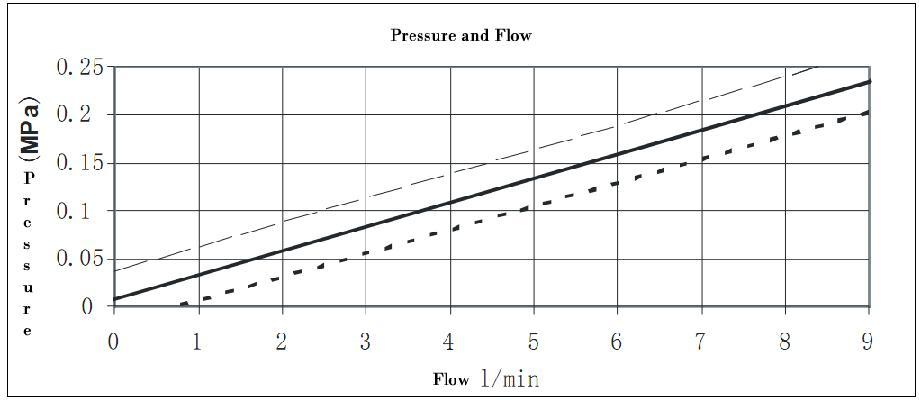
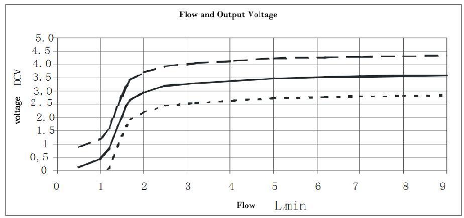
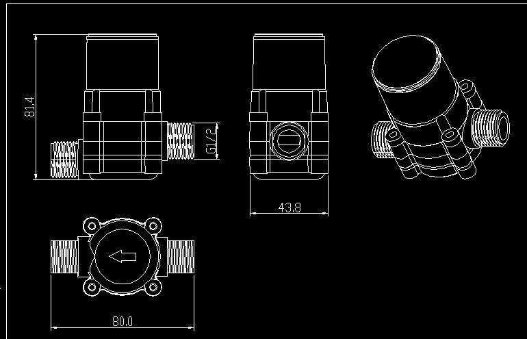
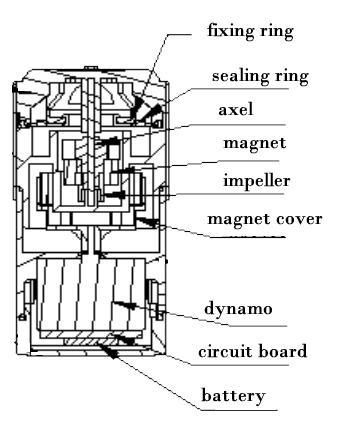

Micro hydro power is clean, renewable energy. Here is a G 1/2 micro hydro generator which can supply stably output voltage and output current with the help of one voltage stabilizing circuit and one rechargeable battery. We can install it at home to save household energy, like using spray shower to light LEDs etc.
Model: POW109D3B
http://www.seeedstudio.com/depot/images/large/product/mhg_01_LRG.jpg


Note: This module has added one voltage stabilizing circuit and one rechargeable battery, output voltage is stably 3.6v and output current is stably 300mA. Flow and Output voltage Diagram
| Weight | 165 g |
| Output voltage | 3.6V |
| Battery Capacity | 300mA |
| Maximum working pressure | 1.75 MPa |
| Working pressure | 0~1.75MPa |
| Working temperature | 0~110°C |
| Maximum | 30mins at 110 °C |
| Recommend flow rate range | 1.5~20 l/min(Pressure 0.05-0.2mpa) |
| Installation Method | direction of arrow |
| Material | nylon/glass fiber,Polyformaldehyde |
| Size of the input and output openings | 0.8inch |


| Revision | Descriptions | Release |
|---|---|---|
| v0.9b | Initial public release | May 27, 2010 |
{kind=link}